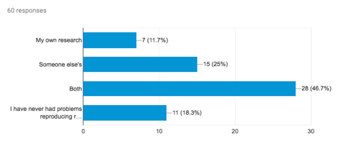
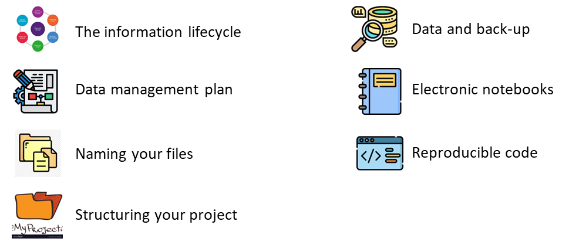
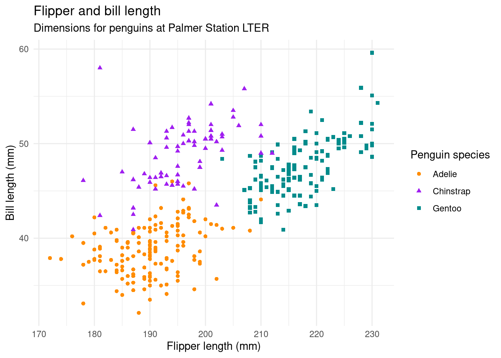

library(tidyverse)
library(palmerpenguins)
library(webexercises)
data("penguins")4 Data Management, Reproducibility & Integrity
Session Presenter
Required packages
Reproducible research
Goal
Our goal is to make reproducible research, and data management and integrity are the necessary steps to achieve this goal
 Have you ever had problems reproducing your own or someone else’s research?
Have you ever had problems reproducing your own or someone else’s research?
Have you ever had problems reproducing your own or someone else’s research?

Check out https://www.repro4everyone.org/
Things to consider when it comes to research
We will go through some of the practical steps for reproducible research:

Quarto for Reproducibility
Meet Quarto
Quarto enables you to weave together content and executable code into a finished document. To learn more about Quarto see https://quarto.org.
Meet the penguins

The penguins data from the palmerpenguins package contains size measurements for {r} nrow(penguins) penguins from three species observed on three islands in the Palmer Archipelago, Antarctica.
The plot below shows the relationship between flipper and bill lengths of these penguins.

Quarto file
Exercise
 Download an example quarto file and try running it on your own.
Download an example quarto file and try running it on your own.
Further Study
Check out the information life cycle https://data.uq.edu.au/data-essentials/information-lifecycle
Check out the push for open research, research that is reproducible and accessible https://www.repro4everyone.org/
Meta data:
How to write metadata?
Stanford Libraries – Create metadata for your research project
The Carpentries Incubator – Introduction to metadata
ARDC – Metadata guide
Data Planning
links: